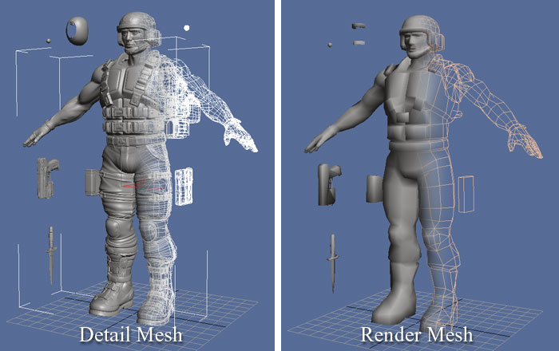
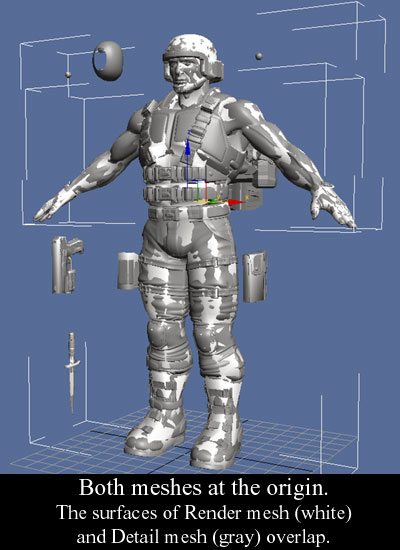
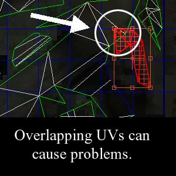
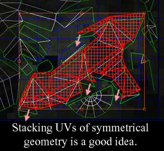

UDN
Search public documentation:
ImportingSkeletalMeshTutorial
日本語訳
中国翻译
한국어
Interested in the Unreal Engine?
Visit the Unreal Technology site.
Looking for jobs and company info?
Check out the Epic games site.
Questions about support via UDN?
Contact the UDN Staff
中国翻译
한국어
Interested in the Unreal Engine?
Visit the Unreal Technology site.
Looking for jobs and company info?
Check out the Epic games site.
Questions about support via UDN?
Contact the UDN Staff
UE3 Home > Skeletal Meshes > Importing Skeletal Mesh Tutorial
Importing Skeletal Mesh Tutorial
Document Summary: A tutorial on getting animated meshes and animations into the Unreal Engine. Document Changelog: Created by Chris Sturgill (Demiurge Studios?). Updated by Laurent Delayen.
Introduction
This document serves as an introduction to the Unreal Engine 3 skeletal meshes pipeline.
Normal Maps
Unreal Engine 3 provides the ability to utilize normal maps. A normal map is generated by reading geometric detail from a very high polygon mesh and saving the normals into a UV mapped texture.  The generated normal map is then applied in Unreal Engine 3 to a low polygon mesh, the end result being a mesh which looks much more polygonally complex than it actually is. The low polygon mesh is then rigged, animated and exported to Unreal Engine 3.
Preparing Content for Export
At this point you should have a high polygon mesh and a low polygon mesh which are placed at the same point in space. The low polygon mesh should be unwrapped and its UVs should be nicely laid out.  This is important because the SHTools process is based on the unwrapping of the low polygon mesh. This can also be accomplished with newer versions of 3D Studio Max.
A Few Words About UVs
The process of normal mapping requires special unwrapping considerations. For best results make sure UVs do not overlap. It is ok to stack UVs if the geometry involved is geometrically identical. For example, it is not a good idea to have different parts of a mesh overlap, like the following image:  It is fine to stack UVs, such as the case of mirrored geometry, as in the screenshot below:  These restrictions do not necessarily apply to the high polygon mesh as it doesn't need to be textured at all for the SHTools process to work.
Generating Normal Maps
The process of generating normal maps from the high polygon mesh can be handled by the SHTools plugin, or by tools in 3DStudio Max, Maya or Softimage XSI. This tutorial will cover simple step-by-step instructions. Please note that the SHTools mesh processor and server were created before Max/Maya/XSI had their own normal mapping tools. We generally use those now for creating our normal maps. It is strongly suggested that you consider using a 3D Modeling package such as Maya to create normal maps.
Exporting Animated Mesh and Anims
The detailed process of exporting your mesh can be found on the Exporting Meshes Tutorial page. The process of exporting your rigged Render mesh and animations is covered in detail in the ActorXMaxTutorial. Note: Exporting normal maps via SHTools (mentioned above) for Unreal Engine 3 is not currently supported. However, as the animation pipeline has not changed, exporting animations from Maya is currently supported and is covered in detail in the ActorXMayaTutorial.
Getting Content into the Engine
With everything exported and ready, assets can now be brought into the engine via the Unreal Editor. The detailed process of importing a mesh can be found on the Importing Meshes Tutorial page. For more information on the Generic Browser and the Package System, see the Generic Browser Reference and Unreal Packages pages. Importing textures and creating materials is covered in the Materials Tutorial page.
Importing Skeletons
The ActorX pages for information on importing PSK files into the Unreal Engine.
Importing Animations
See the Importing Animations Tutorial for information on how to import animation PSA files into the Unreal Engine.
Using Skeletal Mesh Actors
The process for placing Skeletal Mesh Actors in a level is quite simple:
- Select the SkeletalMesh in the Generic Browser.
- Right click in the level, go to 'Add Actor' and choose 'Add SkeletalMesh'. You should see the mesh appear in the level.
Useful Console Commands
show bones - shows bones locations used to render skeletal mesh.
See the Console Commands page for more useful commands.